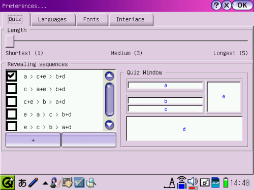

The Preferences dialog allows you to specify custom attributes of toMOTko. It contains 4 panels : Quiz, Languages, Fonts, and Interface.
The Quiz panel is shown below :
You can specify the quiz length using the slider in the Quiz pane. The number pointed by the slider is the minimum times a word will be asked in the Quiz. This is useful depending if you're learning the words for the very first time or if you're just reviewing them.
You can also specify the quiz's revealing sequences checking one or more boxes. This is useful to learn the words in different "directions" (for example, from English to Japanese or from Japanese to English). When more than one revealing sequences are selected, the Quiz will pick randomly one sequence before asking a term.
By default, some commonly used revealing sequences are defined. In case it's not enough, you can create your own revealing sequence. See below for details.
A revealing sequence determines which fields will be shown by the Quiz when asking a question and in which order they will be revealed. A revealing sequence is expressed as a character string similar to a mathematical expression. Each letter corresponds to a specific field of the Quiz as shown in the picture on the left. Between each letter, either a junction (+) operator or an iteration (>) operator is used.
For example, let's take a look at the following revealing sequence : a+e > c > b+d.
a+e means that the Quiz, when asking a question, will start showing the source language's term field (a) and the image field (e) (if there is one defined for the current term). Then, if the Eye button is clicked, the target language's term will be revealed (c). If the Eye button is clicked again, the target language's Alt./Phon. field (b) and Comment field (d) will be revealed.
When all fields are revealed, if Eye button is clicked another time, the Comment field will be expanded. If the Eye button is clicked again, the Comment field will be minimized.
To remove a revealing sequence, select it and click the - button.
To add a revealing sequence, click the + button to invoke the Sequence Editor.
The Sequence Editor is shown below :
To compose the revealing sequence expression, you click the appropriate buttons. The buttons will be disabled or enabled in function of the state of the revealing sequence expression. This way, it guarantees that the expression will be valid once it's finished.
To reveal more than one field at a time, you use the junction (+) operator. To reveal fields after clicking the Eye button, you use the iteration (>) button. Once the revealing sequence is completed, you click Ok and it will be added in the list. To cancel the composition of a revealing sequence, close the window by clicking the X button and the sequence will be discarded.
The Languages panel is shown below :
You can specify the study languages by checking each language of interest in in the list, including your mother tongue. Once this is done, you will have the possibility to change the source and target languages in the Glossary Manager using the language selectors in the menu bar on the top of the screen.
The Fonts panel is shown below :
You can specify the font of labels and fields using the font selector in this pane. The available fonts of your system will be displayed in the list box. You can select a font name and its size. The font change will take place once you close the Preferences dialog. You may have to install additional fonts depending on the languages you want to study. It's recommended to have the unifont font installed so that you can display most of the characters.
Depending of the fonts installed on your system, some sizes may not be available and the result may be a little bit surprising. Try some values until you're satisfied.
You can always reset the original font settings clicking on the Reset button.
To set a special font in function of the language, you use the Font Overrides definitions at the bottom of the pane. This is desirable when the default font (the Fields font) is not suited for some languages.
To give an example, here are my font preferences :
| Fonts | |
| Labels | unifont, medium |
| Fields | unifont, medium |
| English | verdana, large |
| French | verdana, large |
| German | verdana, large |
| Japanese | lcfont, large |
| Spanish | verdana, large |
As the comment field is likely to contain text in two languages (the source and target languages), toMOTko will try to use the best possible font, considering the Font Overrides. In the worst case, it will use the Field font as default. Because of that, it's recommended to set a generic font for Field font (like unifont).
The Interface panel is shown below :

You can enable the built-in accent support by checking the Digraph option.
The digraphs option was borrowed from the famous Vim editor (http://www.vim.org). It allows a user to input accented letters of some foreign languages without installing an external Input Method component. It works like this : Whenever you want to input an accented letter, you will do it using 2 letters (hence the name digraphs). For example, if you want to write a 'ö' (useful when learning German), we type the letter 'o', followed by backspace (that removes it), then we type ':'. Another example, if you want to write a 'ñ' (useful when learning Spanish), we type the letter 'n', followed by backspace and '~'.
For the moment, only a few digraphs are available. More digraphs will probably be added in later versions.
Getting used to digraphs is very easy. If you already have an Input Method component installed however, you may not need this feature and you can disable it safely.
You can hide or show the quiz buttons depending if you prefer to have more space allocated to display the words' information or not. If you check the box, as the buttons are hidden, you will have to use the keyboard accelerators to operate the quiz.
To show the value of Alt./Phon. field for the target language column of the list of terms in the Glossary Manager, you can check the option in this panel. This may be convenient and keep you from editing needlessly a term to see its pronunciation.
You can also set a keyboard shortcut by selecting a specific action in the list and clicking the Set key button. The next key typed will be affected as a shortcut for the selected action.
You can remove a keyboard shortcut by selecting a specific action in the list and clicking the Clear key button.
You can reset keyboard shortcut to its default value by selecting a specific action in the list and clicking the Reset key button.
Default values are assigned for most of the actions.